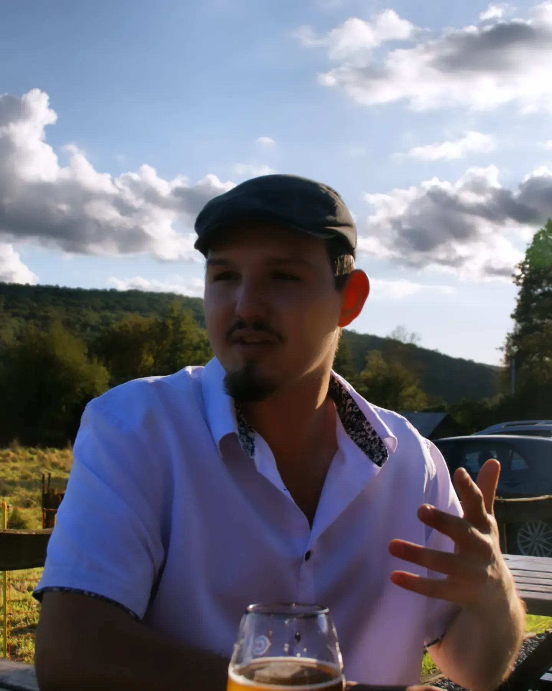

Derrière le studio
Le pont entre la créativité visuelle et la rigueur technique.

Qui suis-je ?
Salut, je suis Bastien, fondateur de B-Impact Studio. Étudiant à la Haute École Albert Jacquard (HEAJ) de Namur, j'ai toujours été fasciné par la façon dont le web et le design façonnent notre quotidien et nos interactions numériques.
Très vite, j'ai réalisé qu'avoir une bonne idée ne suffisait pas : il faut savoir la communiquer visuellement, mais aussi la construire techniquement. C'est pourquoi B-Impact Studio réunit les deux : d'un côté je conçois des identités graphiques et des stratégies de communication, de l'autre je développe des sites et des applications web sur mesure.
Projet de fin d'études (TFE)
Actuellement en dernière année, je consacre mon mémoire aux stratégies de communication et d'influence dans le secteur du jeu vidéo. Une analyse qui nourrit directement l'expertise en communication de B-Impact Studio.
Organisation & langues
Gestion de projet
Structuration rigoureuse des projets, des bases de contenu et des plannings.